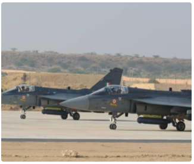

6 countries interested in buying India's Tejas fighter jets, govt releases list
short by Sakshita Khosla / 09:03 pm on 05 Aug 2022,Friday
The government on Friday said that state-owned Hindustan Aeronautics Limited (HAL) has offered to sell 18 Tejas fighter jets to Malaysia, adding that six other nations are interested in buying them. Argentina, Australia, Egypt, the United States of America, Indonesia and the Philippines have expressed an interest in buying the light-combat aircraft (LCA), the Defence Ministry said.